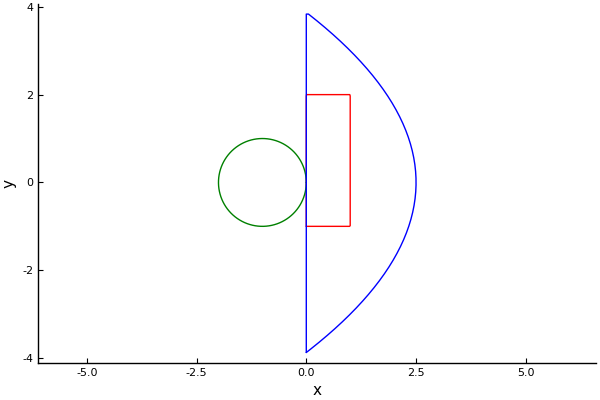

Shapes
Shape is an abstract type which represents the shape of particles, and also the domain to place particles. See Shape for a list of relevant types and functions.
Existing shapes
The package provides three basic shapes. You can plot them using:
rectangle = Rectangle([0.0,-1.0],[1.0,2.0])
circle = Circle([-1.0,0.0],1.0)
timeofflight = TimeOfFlight([1.0,0.0],3.0)using Plots;
plot(rectangle, linecolor = :red)
plot!(circle, linecolor = :green)
plot!(timeofflight, linecolor = :blue)
The Rectangle and TimeOfFlight are usually region where particles are placed. Time of flight is a shape which contains shapes from a half space which take at most t time to reach from the listener. The Circle is also used to define circular particles.